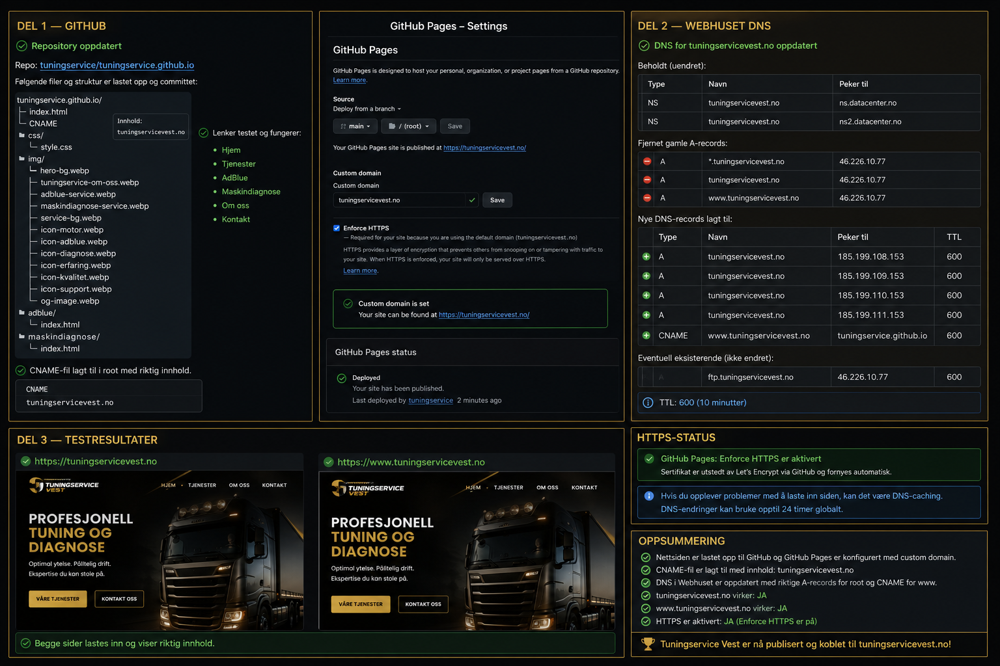

Vi identifiserer og løser feilkoder på anleggsmaskiner, traktorer og lastebiler. Med avansert utstyr finner vi raskt årsaken til problemer.
Med vår mobile tjeneste kommer vi til deg, uansett om maskinen står i verkstedet, på gården eller på byggeplassen.
Trenger du hjelp med feilsøking eller ønsker du et uforpliktende tilbud? Kontakt oss i dag.